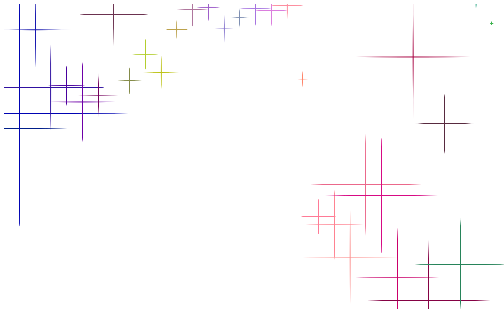

University of California, Santa Cruz
Lubin Tu
=============================================================================
Assignment 1: Music Visualization with Particle System
- particles' speed, lifetime, and scale are determined by the frequency of music,
for example, the higher frequency of music has, the slower particles move,
and faster their lifetime decreases.
=============================================================================